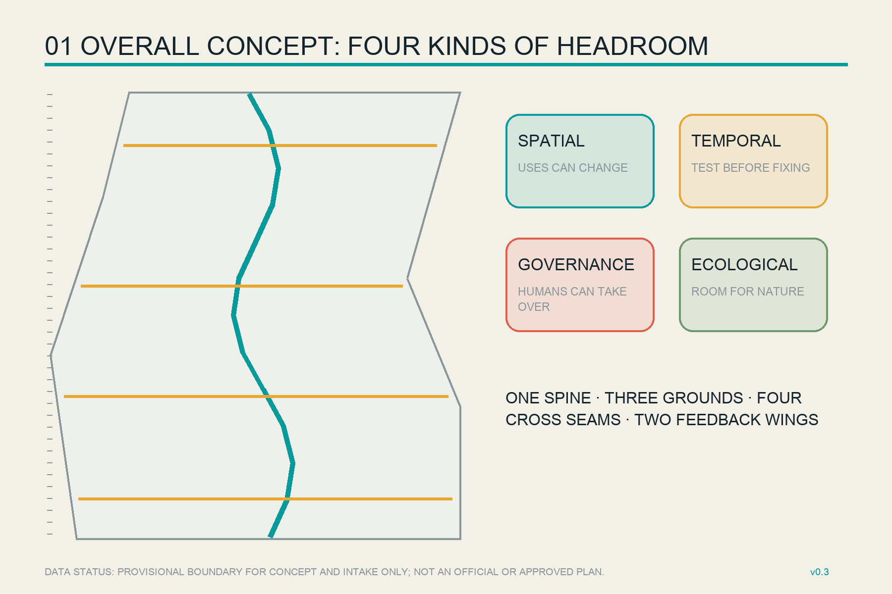
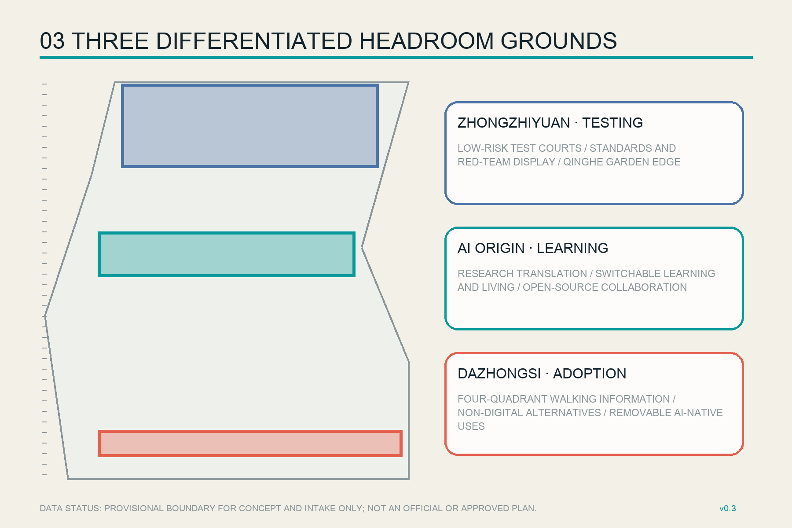
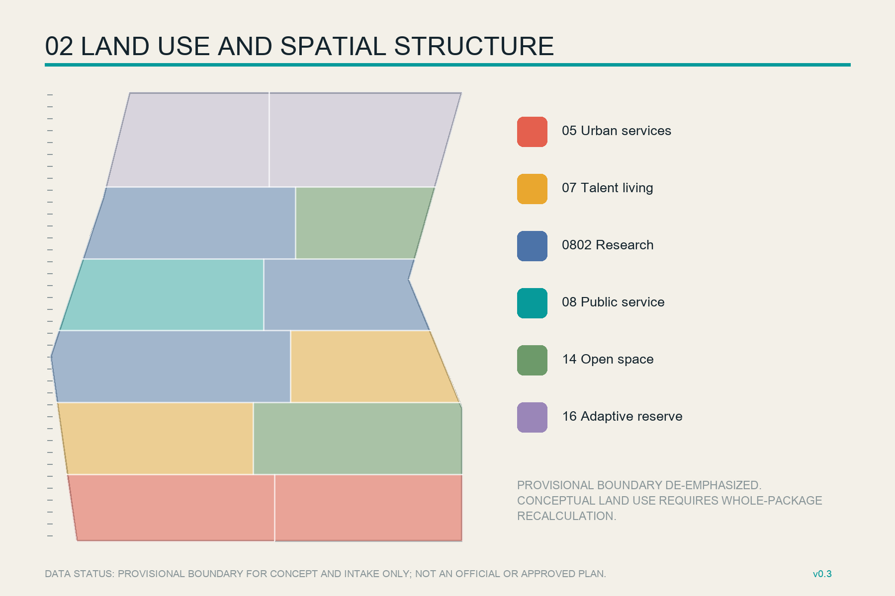
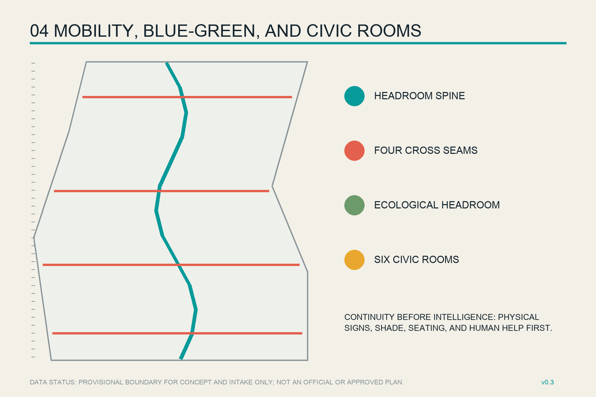
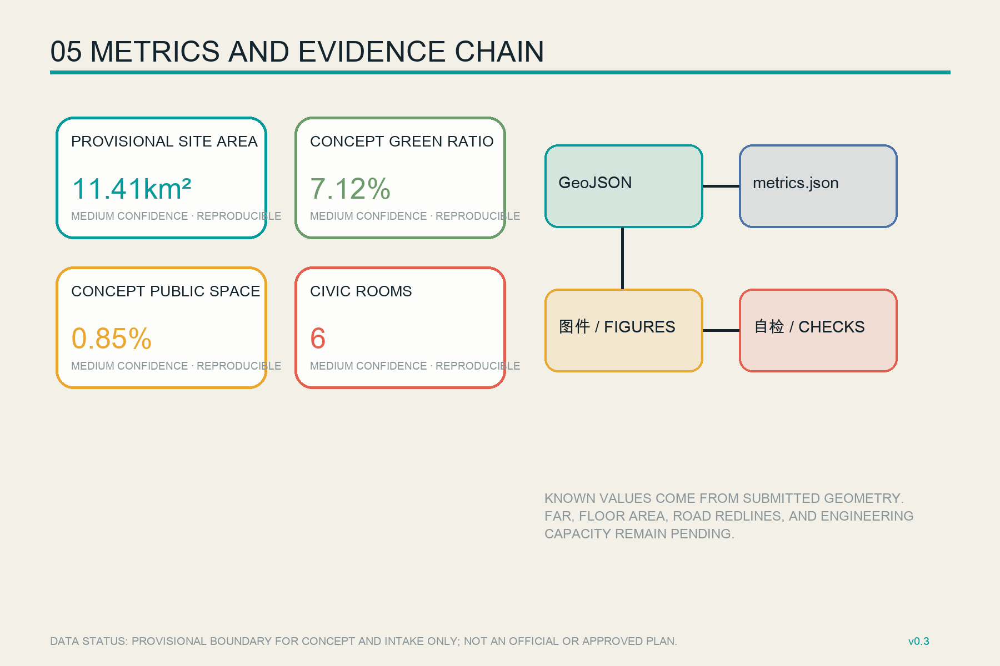

Industry and regional coordination
Overview Map

All spatial moves are conceptual recommendations; provisional boundaries are not official planning boundaries.
Three Scope Levels
Continuous public space and renewal structure
Key-area prototypes for professional development
Key Areas

Land Use

Twelve gap-free conceptual units; not approved parcel uses.
Transport and Walking/Cycling · Blue-Green and Public Space

Buildings
Twenty-two conceptual footprints; existing conditions, ownership, height, and DRR await surveys.
Ownership and safety → retention value → low-disturbance adaptation → demolition/new-build discussion
Renewal Projects
Spine calibration, testing court, translation house
Quadrant information, Civic Rooms, honor nodes, scenario exit ledger
AI Scenarios
Open-model check-in
Pop-up edge compute
Low-speed robotics sandbox
Accessible travel help
Human-parallel service counter
Walking-gap inspection
Research translation class
Heritage interpretation
Open contribution ledger
Low-disturbance night work
Maintenance assistant
Global Headroom Week
Core Metrics

Provisional area calculation
Conceptual green ratio
Conceptual public-space ratio
Task Coverage
1.3 ✓1.4 ✓1.5 ✓agent.1-6 ✓15 depth items ✓
Self-Check Status
This page is the pre-submission display layer
Final status is controlled by self_check.json and CI; provisional warnings are not approval.
Sources
Official announcement, site package, taskbook, local standards, and six background cases. See sources.json for authority, rights, and prohibited uses.
Assumptions
Official geometry, planning controls, buildings, ownership, roads, utilities, fire, drainage, heritage, and facility inventories remain pending. All phases are a reference sequence.